Getting Started¶
Mission Control can be used with or without a vehicle running on the same network. To enable most of the functionalities a vehicle should be running or simulated on the same network as the mission control application.
Connecting to a Vehicle¶
After building and running the mission control you can see two windows on your screen:
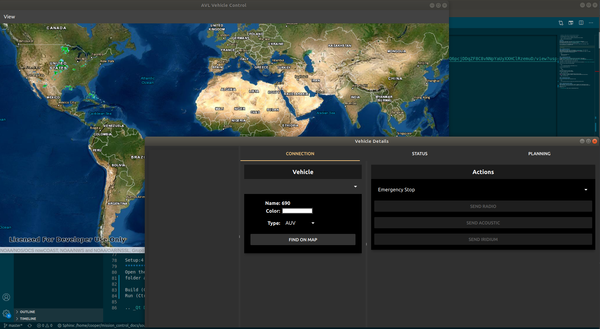If no vehicle is running on the network you will not be able to see any vehciles on the map and vehicle detail windows. The mission control can still be used to plan missions.
If any vehicle is running on the same network, it will automatically show up on the map and vehicle detail windows. As shown below:
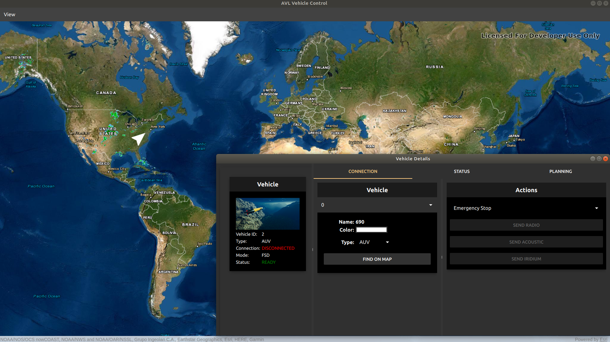To connect to the vehicle you can either select the vehicle from the drop down menu in Vehicle or select the vehicle from the sidebar as shown in the images below:
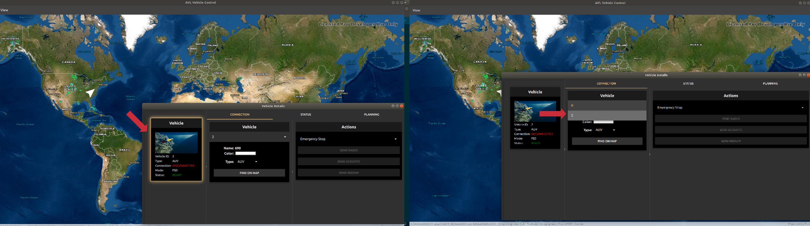Vehicle Status¶
To confirm that the vehicle is connected and sending its status back, you can navigate to the Status tab to monitor vehicles current status as shown in the image below:
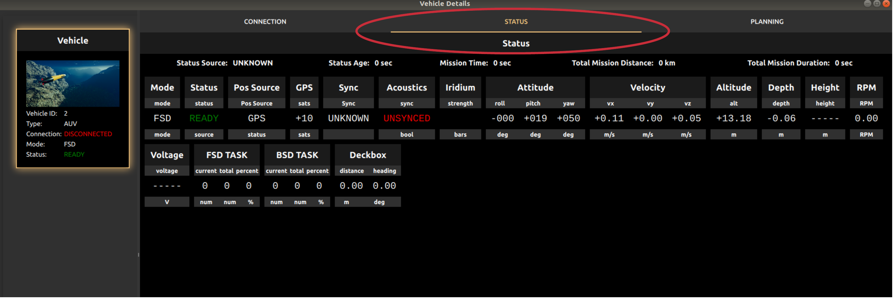Once the vehicle is connected you can also see the current position of the vehicle on the map window.
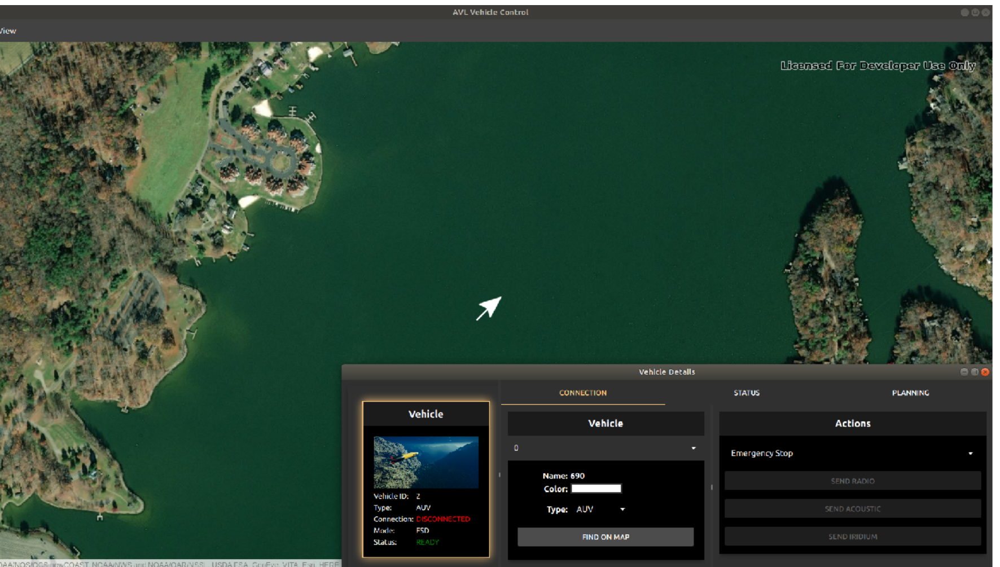If the status is not updating there is some connection problems or the vehicle is under water.
Planning a Mission¶
To plan a mission navigate to the Planning Tab:
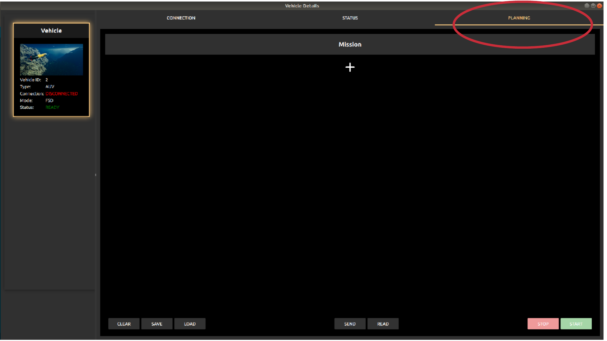To add a new action press the plus button in the mission menu:
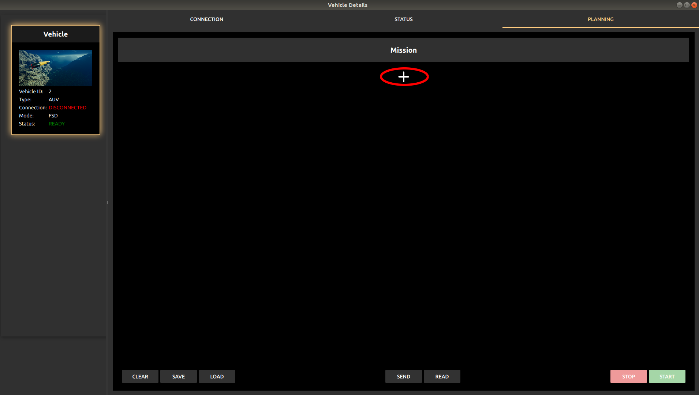Now select the action type you want to in the mission from the drop-down menu of the recently added action:
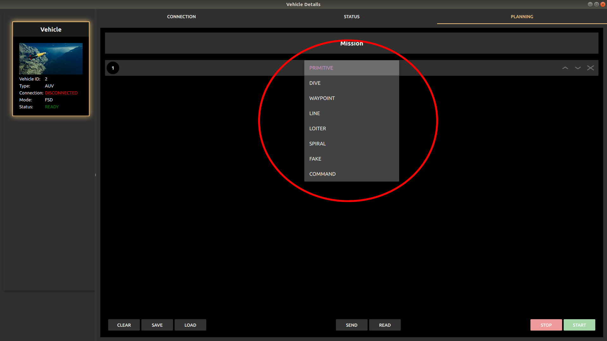Once the type of the action has been selected you can edit the details of the action by pressing the actions index to reveal the parameters of the action:
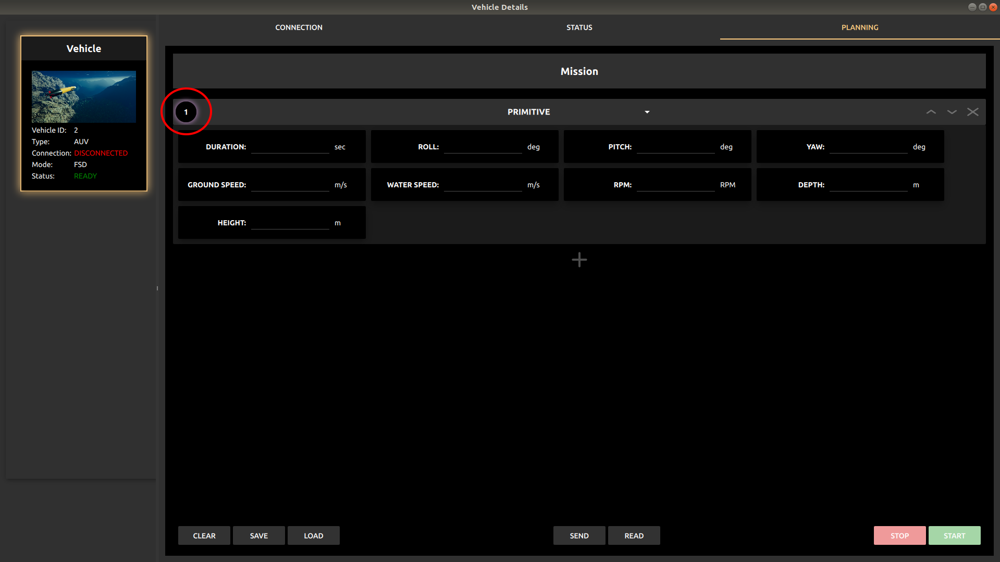Similarly, commands can also be provided as an action in the mission queue.

Uploading the Mission to the Vehicle¶
The planned mission can be uploaded to the vehicle using the ‘Send’ button present at the bottom of the mission menu.
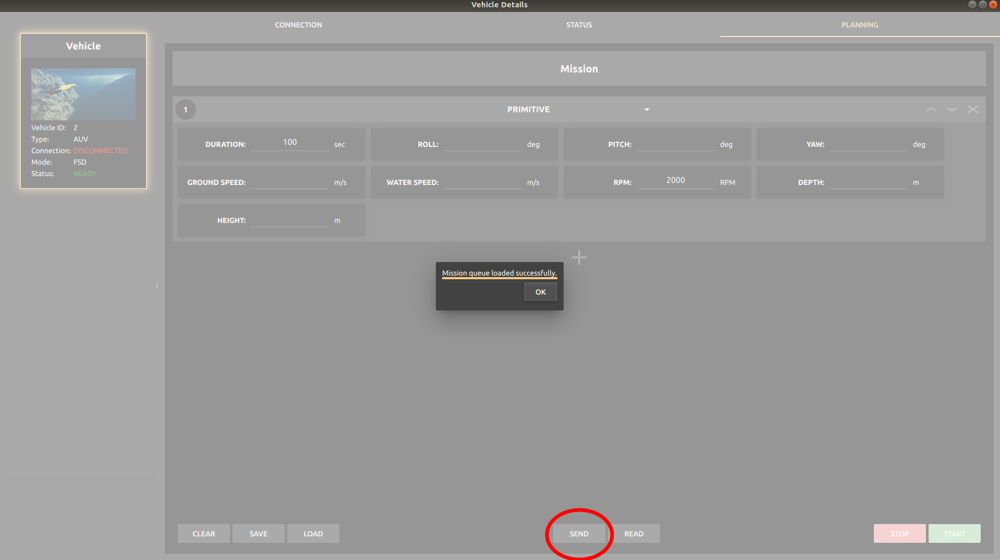Once the mission is loaded on the vehicle successfully you will receive a confirmation message of the upload.
Starting a Mission¶
Once the mission is successfully uploaded to the vehicle, ‘START’ command can be sent from the mission menu that triggers the vehicle to follow the mission uploaded by the user.
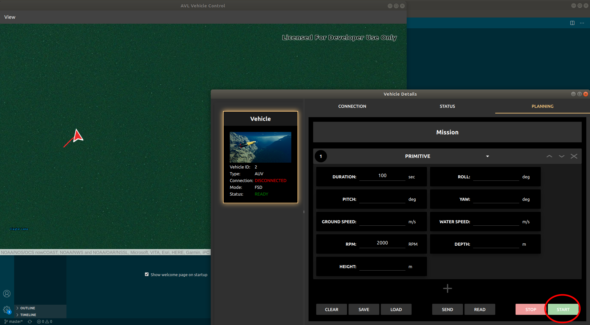